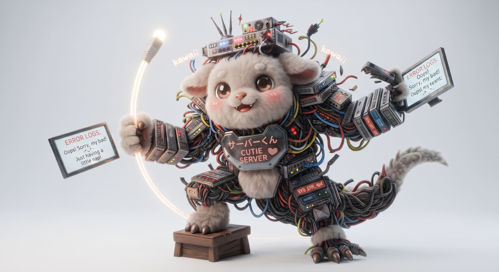

🎵 BGM:
停止中
再生
☰
メニュー
🍬 メニューナビゲーション
🏠 ホーム（トップに戻る）
🔒 プライバシーポリシー
💌 お問い合わせ
🍓 運営者情報
⚖️ 免責事項
閉じる
ポリシー
閉じる
キャラクタープレビュー
閉じる
🍬 ☁️ 🍭 ☁️ 🍬
🐸 🍇 🍦 ✨
ぽよぽよシステム仕様書
〜生年月日からはじき出す、あなたの取扱説明書（トリセツ）診断〜
🍓 あなたのシード値（たんじょうび）をえらんでね 🍓
カレンダー選択
和暦で入力 (例: 平成元年5月15日)
👤 あなたの性別をえらんでね 👤
👨 私は男性
👩 私は女性
👇
👆 初期パラメータ設定完了（タップして実行）
🍦 仕様書をビルドして展開する 🍦
⛩️ ぽよぽよシステムの守り神 ⛩️

✨
守り神：ぽよぽよ・マイナ
「私はこの『ぽよぽよシステム仕様書』の英知を統括するマイナ。高度な演算アルゴリズムであなたの運命や本質を完璧に解析してみせるわ！……あ、ちなみに昨夜、自分の思考ルーチンにうっかり無限ループのバグを仕込んじゃって、朝までずっと同じ独り言を3億回繰り返してたのは秘密ね。デバッグって本当に大変なんだから！さあ、誕生日を入れてちょうだいっ♪」
📚 登録キャラクター図鑑 (全12種)
💌 相性クロスチェック診断 (Next Stage...)
👆 タップしてキャラクター切り換え
🍦
ぶどうからソフトクリームちゃんがポコッと誕生！
🍇 [基本アーキテクチャ（性格特徴）]
💥 [バグ・オーバーヒート条件]
🍼 [なかよし運用プロトコル]
💖 [恋のコミット・プルリク条件（恋愛）]
💍 [結婚・ライフプラン設計]
💻 [キャリア・ワークスタイル（仕事）]
📊 [財務管理・金銭感覚]
🪙 [マネー・インフラ運（金運）]
🛠️ [自己改善パッチ（運気向上）]
💌 [人間関係のトリセツ：あの人の仕様書]
⚡ [相性マトリクス＆デバッグのコツ]
✨ 臨時アップデートパッチ
ぽよぽよマイナ様からのお告げ
ここにマイナ様のお告げが入ります。
🛒 Amazonで今日のラッキー開運小物をチェックする
🏠 もう一度別の誕生日を占う（ホームへ） 🏠
🎨 このキャラクターの他のタイプ（タップで拡大）
🍬 紹介している子たちの属性